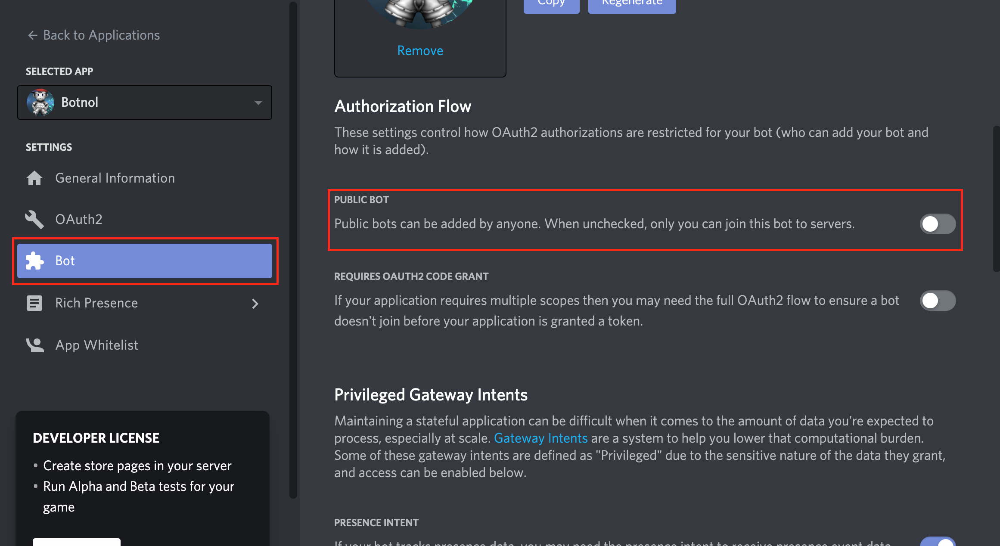

Admin
This is the cog guide for the admin cog. You will find detailed docs about usage and commands.
[p] is considered as your prefix.
Note
To use this cog, load it by typing this:
[p]load admin
Usage
This cog will provide tools for server admins and bot owners.
It can add or remove a role to a member, edit one or make some available for members so they can self-assign them as they wish.
It also provides tools for the bot owner such as server locking (once enabled, the bot will instantly leave new servers it joins) and announcements, which can send something in all the servers of the bot.
Commands
Here’s a list of all commands available for this cog.
selfrole
Syntax
[p]selfrole <selfrole>
Description
Add or remove a role from yourself. It must have been configured as user settable by admins using the selfroleset command.
Arguments
<selfrole>: The role you want to attribute or remove from yourself. Please give the exact role name or ID, or it won’t be detected.
selfrole add
Syntax
[p]selfrole add <selfrole>
Description
Add a role to yourself. It must have been configured as user settable by admins using the selfroleset command.
Arguments
<selfrole>: The role you want to attribute to yourself. Please give the exact role name or ID, or it won’t be detected.
selfrole remove
Syntax
[p]selfrole remove <selfrole>
Description
Remove a role from yourself. It must have been configured as user settable by admins using the selfroleset command.
Arguments
<selfrole>: The role you want to remove from yourself. Please give the exact role name or ID, or it won’t be detected.
selfrole list
Syntax
[p]selfrole list
Description
List all of the available roles you can assign to yourself.
selfroleset
Note
This command is locked to the
admin role. This is also usable by the members with the
Manage roles permission.
Syntax
[p]selfroleset
Description
Define the list of user settable roles. Those roles will be available to any member using the selfrole command.
selfroleset add
Syntax
[p]selfroleset add <role>
Description
Add a role, or a selection of roles, to the list of available selfroles.
Warning
Members will be able to assign themselves the role. Make sure it doesn’t give extra perms or anything that can break your server’s security.
Arguments
<role>: The role to add to the list. Please give the exact role name or ID, or it won’t be detected.
selfroleset clear
Syntax
[p]selfroleset clear
Description
Clear the list of available selfroles for this server.
selfroleset remove
Syntax
[p]selfroleset remove <role>
Description
Remove a role, or a selection of roles, from the list of available selfroles.
Arguments
<role>: The role to remove from the list. Please give the exact role name or ID, or it won’t be detected.
addrole
Note
This command is locked to the
admin role. This is also usable by the members with the Manage
roles permission.
Syntax
[p]addrole <rolename> [user]
Description
Adds a role to a member. If user is not given, it will be considered
as yourself, the command author.
Arguments
<role>: The role to add to the member. Please give the exact role name or ID, or it won’t be detected. If the role name has spaces, provide it enclosed in quotes like this:"my role with spaces".[user]: The member you want to add the role to. Defaults to the command author. You can either mention the member, provide their ID, their exact name with the tag or not, or their nickname.
removerole
Note
This command is locked to the
admin role. This is also usable by the members with the
Manage roles permission.
Syntax
[p]removerole <rolename> [user]
Description
Removes a role from a member. If user is not given, it will be considered
as yourself, the command author.
Arguments
<role>: The role to remove. Please give the exact role name or ID, or it won’t be detected. If the role name has spaces, provide it enclosed in quotes like this:"my role with spaces".[user]: The member to remove the role from. You can either mention the member, provide their ID, their exact name with the tag or not, or their nickname. Defaults to the command author.
editrole
Note
This command is locked to the admin role.
Syntax
[p]editrole
Description
Edits the settings of a role.
editrole name
Syntax
[p]editrole name <role> <name>
Description
Edits the name of a role.
Arguments
<role>: The role name to edit. Please give the exact role name or ID, or it won’t be detected. If the role name has spaces, provide it enclosed in quotes like this:"my role with spaces".<name>: The new role name. If it has spaces, you must use quotes.
editrole color
Syntax
[p]editrole color <role> <color>
Description
Edits the color of a role.
Arguments
<role>: The role name to edit. Please give the exact role name or ID, or it won’t be detected. If the role name has spaces, provide it enclosed in quotes like this:"my role with spaces".<color>: The new color to assign. You can either provide the hexadecimal code of the color, or one of the colors listed here:discord.Color.
Examples
[p]editrole color "My role" #ff0000[p]editrole color "My role" dark_blue
announce
Note
This command is locked to the bot owner.
Syntax
[p]announce <message>
Description
Announce your message to all of the servers the bot is in.
The bot will announce the message in the guild’s announcements channel. If this channel is not set, the message won’t be announced.
Arguments
<message>: The message to send.
announce cancel
Note
This command is locked to the bot owner.
Syntax
[p]announce cancel
Description
Cancels an active announcement.
announceset
Note
This command is locked to the server owner.
Syntax
[p]announceset
Description
Change how announcements are received in this guild.
announceset channel
Syntax
[p]announceset channel <channel>
Description
Sets the channel where the bot owner announcements will be sent.
Arguments
<channel>: The channel that will be used for bot announcements. You can either mention the channel, provide its exact name or its ID.
announceset clearchannel
Syntax
[p]announceset clearchannel
Description
Disables announcements on your server. To enable them again, you will have to re-enter your announcements channel with the announceset channel command.
serverlock
Note
This command is locked to the
bot owner. This is also usable by the members with the
Administrator permission.
Syntax
[p]serverlock
Description
Lock a bot to its current servers only.
This means that, once you enable this, if someone invites the bot to a new server, the bot will automatically leave the server.
Tip
Another way to prevent your bot from being invited on more servers is making it private directly from the developer portal.
Once a bot is private, it can only be invited by its owner (or team owners). Other users will get an error on Discord’s webpage explaining that the bot is private.
To do this, go to the Discord developer portal, select your application, click “Bot” in the sidebar, then untick “Public bot”.
